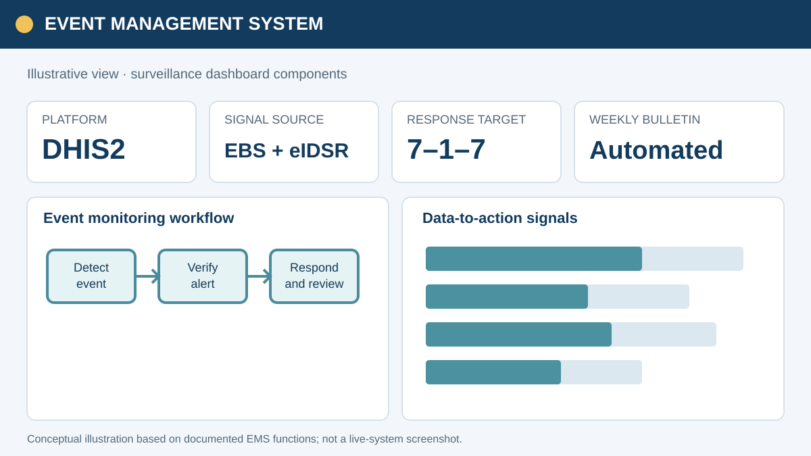
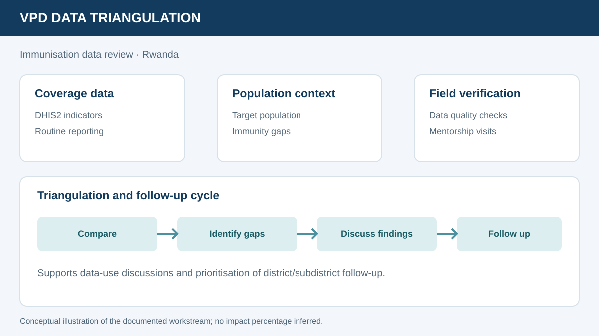
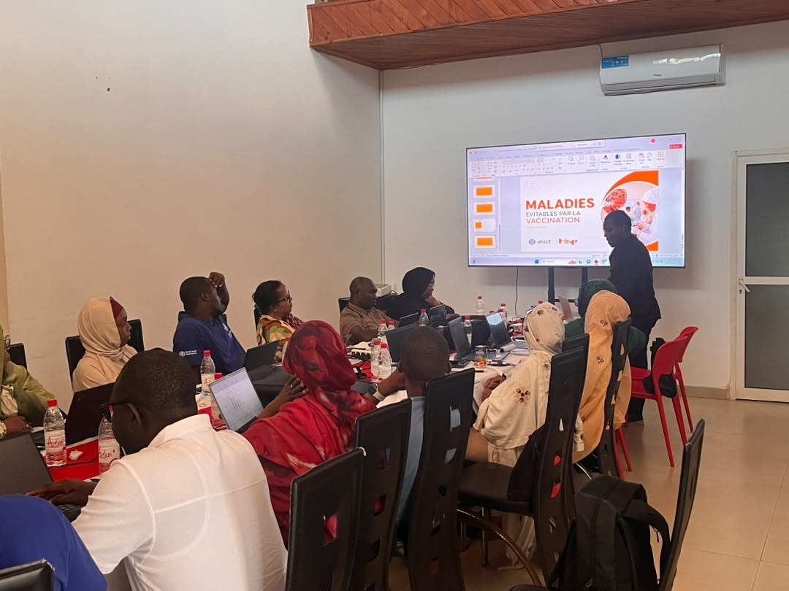
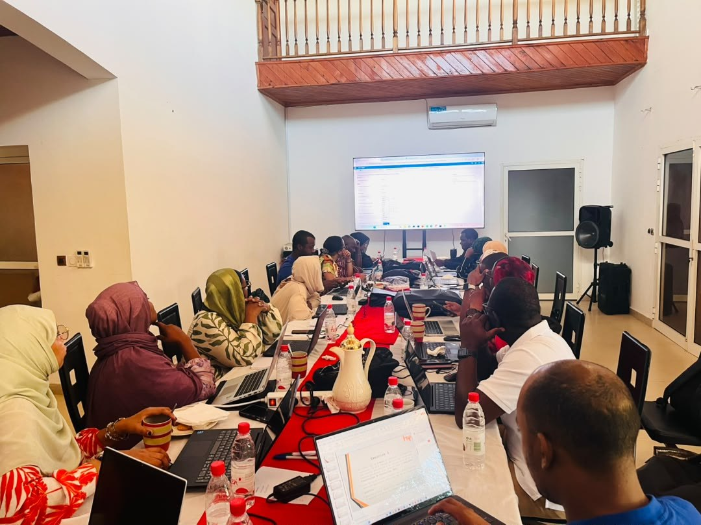

01
National Event Management System (EMS) — Rwanda

Concept illustration · Open related HISP Rwanda story ↗
Contributed to a national One Health event-management platform intended to connect
human and animal eIDSR, Impuruza event-based surveillance and EIOS open-source signals.
The system design includes configurable workflows, threshold monitoring, analytics,
dashboards and epidemiological bulletins aligned with the 7-1-7 framework.
Documented outputs: system architecture and integration design, program rules, dashboard and threshold-monitoring prototypes, weekly bulletin functionality, user acceptance activities and technical-committee pilot validation. Deployment status: production rollout was still pending server availability in the April 2026 report.
Capacity building: the report records 50 participants in an EMS training, 50 of 56 hospital IDSR focal persons attending a separate session, and a workshop involving directors from 56 hospitals.
DHIS2One Health7-1-7Dashboards
02
VPD Data Triangulation — Rwanda

Concept illustration · Open related HISP Rwanda story ↗
Supported subdistrict-level immunisation data triangulation, bringing together
DHIS2-based sources to examine immunity gaps, programme performance and data quality.
Work included dashboard development, data-use review, field mentorship and follow-up
with health facilities and district teams.
Practical value: brings immunisation indicators and data-quality signals into a shared review process, helping district and subdistrict teams identify gaps and prioritise follow-up.
ImmunizationTriangulationData QualityDashboards
03
Digitalized REC Microplanning Tool — Rwanda
 Real photo · REC microplanning Training of Trainers, Musanze ↗
Real photo · REC microplanning Training of Trainers, Musanze ↗
Supported the digitalisation of Reach Every Child immunisation microplanning in DHIS2,
including health-facility profiles, social-demographic and transport information,
root-cause analysis, operational microplans, standard reports, line listing and dashboards.
Documented outcome: a five-day Training of Trainers held in Musanze
from 9–13 March 2026 prepared central-level staff and hospital EPI supervisors to lead
cascade training. The report records 61 attendees, with 100% attendance against the
planned participant total.
DHIS2RECMicroplanning61 trained
Official HISP Rwanda story and photos ↗
04
Impuruza & eIDSR Enhancement — Rwanda
 Real photo · Case-based surveillance training in Rwanda ↗
Real photo · Case-based surveillance training in Rwanda ↗
Contributed to assessment and improvement activities for event-based surveillance and
electronic Integrated Disease Surveillance and Response, including workflow review,
indicator and visualizer review, dashboard requirements, conditional field behaviour
and user acceptance testing.
Documented outputs: system gap findings, an improvement roadmap,
UAT activities for completed functionality, and recommendations for more consistent
data entry and reporting. These are described as workshop outputs and follow-up actions,
not as measured health outcomes.
EBS / IDSRProgram RulesUAT
05

Comoros · MEV implementation
MEV Digitalization — Comoros
Supported DHIS2 Tracker workflows for vaccine-preventable disease surveillance,
from notification and investigation through laboratory requests/results and final
case classification, alongside indicators, dashboards, training and user support.
Practical value: establishes a structured digital case pathway from notification and investigation to laboratory follow-up and final classification.
SurveillanceDHIS2 TrackerWorkflow Design
06

Comoros · REV implementation
Electronic Vaccination Register (REV) — Comoros
Supported configuration and operational strengthening of the electronic vaccination
register, including metadata harmonisation, DHIS2 integration, reminder messages,
supervision tools, dashboards, rollout, training and post-deployment troubleshooting.
Practical value: strengthens digital recording, reminder-based follow-up and supervision support for routine vaccination services.
ImmunizationDHIS2RolloutSupervision
07
Climate & Health — Malaria Early Warning
 Real photo · Climate & Health malaria workshop ↗
Real photo · Climate & Health malaria workshop ↗
Supported coordination, data exchange, field activities, model testing and validation
for a climate-and-health initiative exploring malaria early warning. Relevant data
themes include malaria cases, IRS protection, LLIN distribution, vegetation indices,
rainfall, humidity, temperature, heat stress and population.
Documented contribution: supported data exchange, field mentorship and validation of the analytical inputs and workflows needed to explore climate-informed malaria early warning.
Climate & HealthMalariaData ExchangeModel Validation
Official HISP Rwanda story and photos ↗
08
eBuzima EMR — Rwanda
Supported the Ministry of Health’s Frappe/ERPNext-based electronic medical record
implementation through clinical workflow assessment, user training, site-readiness
review, a testing environment and go-live support.
Documented milestone: CorUnum Health Centre transitioned to live
service on 1 November 2024; preliminary rollout support was also provided at
Rugarama Health Centre.
EMRFrappe / ERPNextGo-live
09
DHIS2 Capacity Development — Republic of Congo
Co-facilitated a UNICEF-supported 10-day training in Brazzaville for 55 health-district
data managers representing 52 districts. Topics included aggregate data entry and
validation, data visualisation, maps, dashboards, data quality, data-to-action and
advanced Excel.
Documented reach: 55 data managers across 52 health districts.
DHIS252 districts55 managersData Use
10
SEMIS / Karame — Education Systems
Supported education information-system transition and implementation in Rwanda and
Chad, including configuration, metadata imports, attendance functionality,
organisational-unit setup, testing, issue analysis and stakeholder support.
Practical value: supported implementation readiness and more consistent school-information workflows through configuration, metadata setup, testing and issue resolution.
EducationConfigurationTestingRwanda & Chad
Official education project story and photos ↗